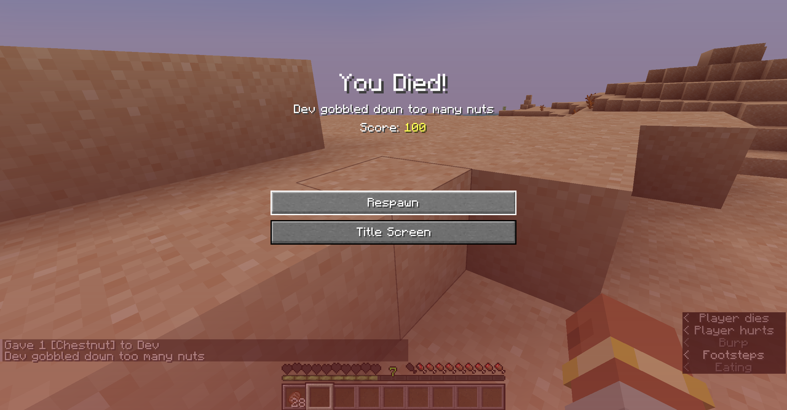
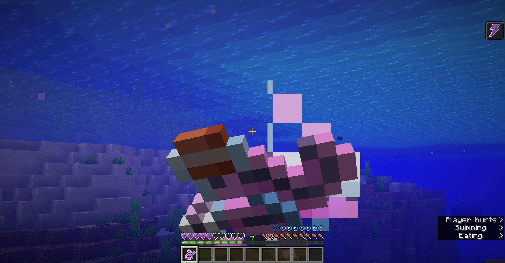
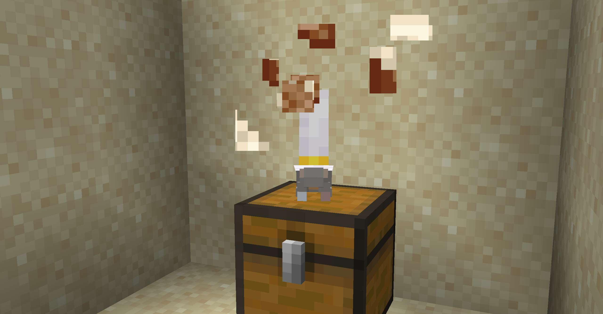
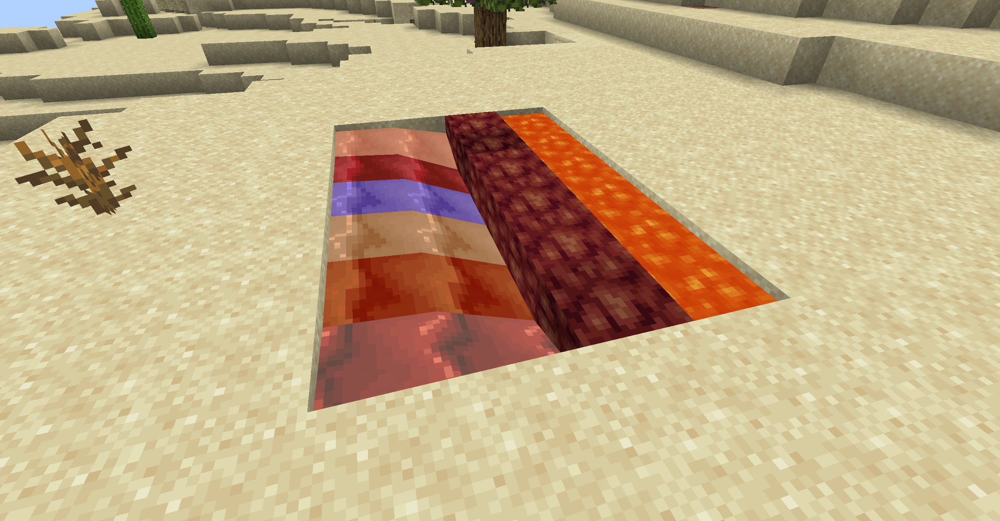
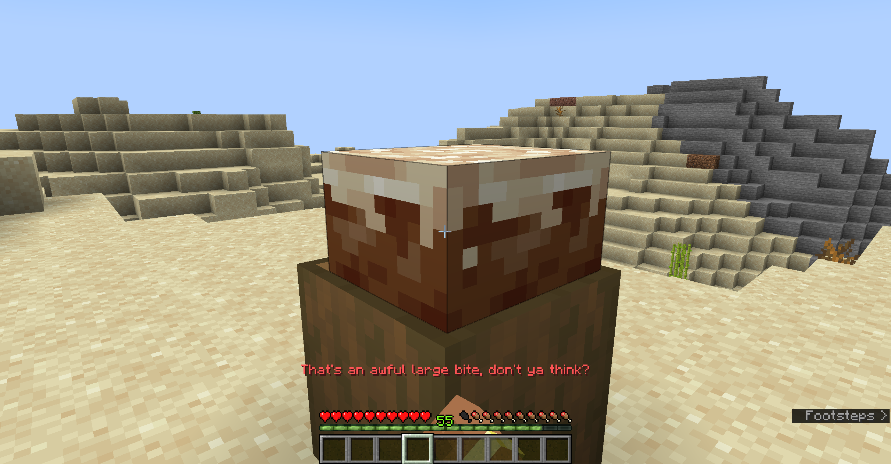
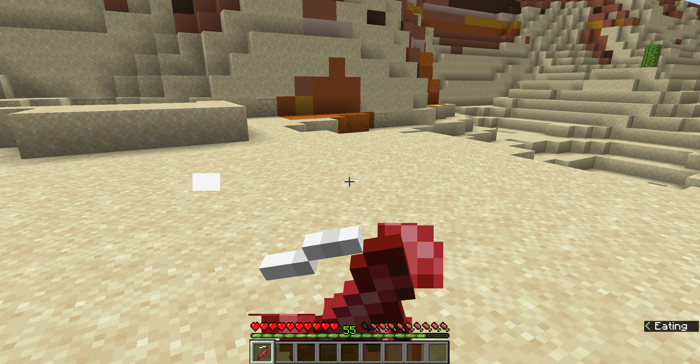
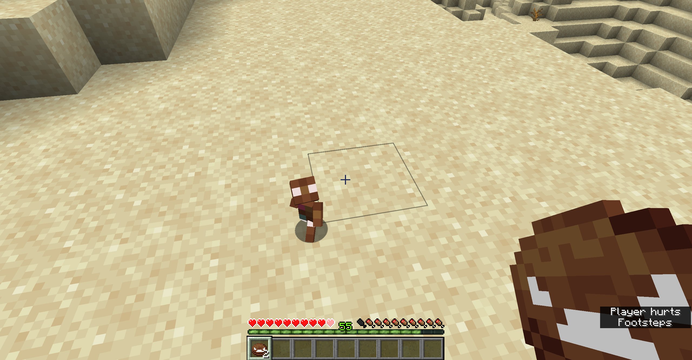
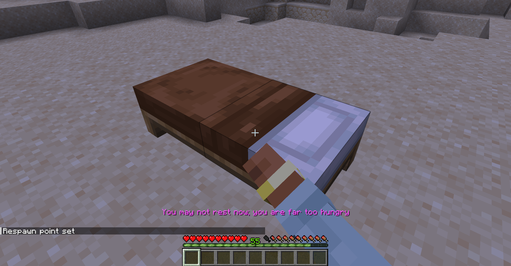
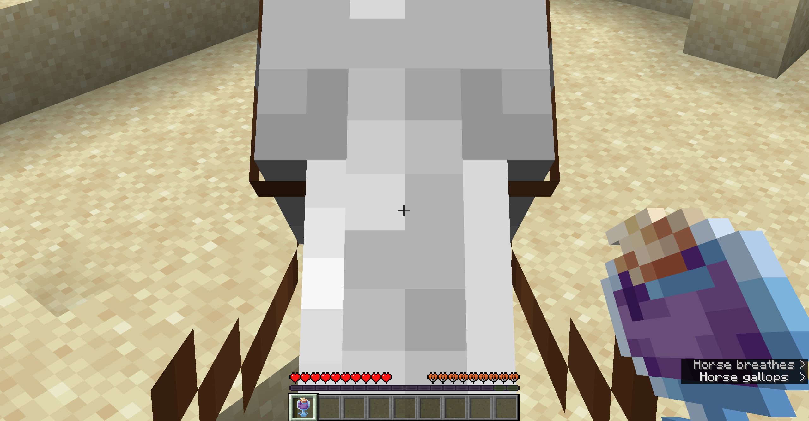
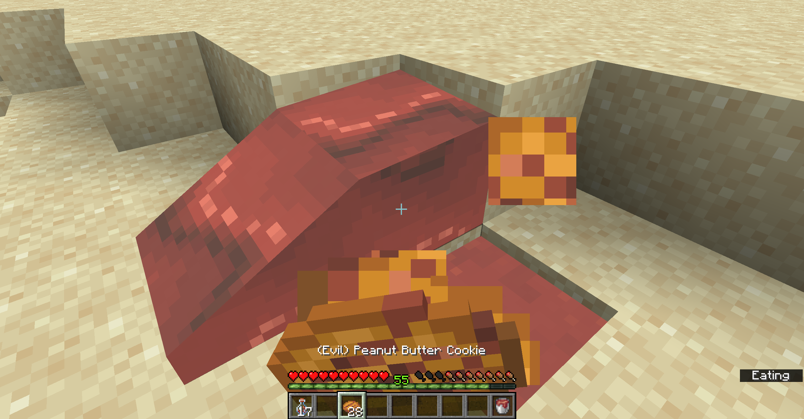
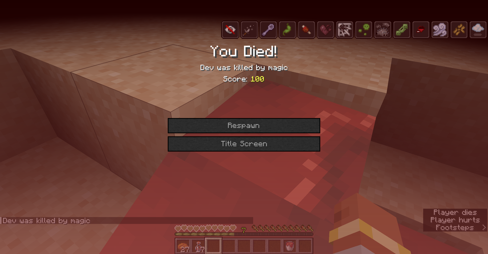
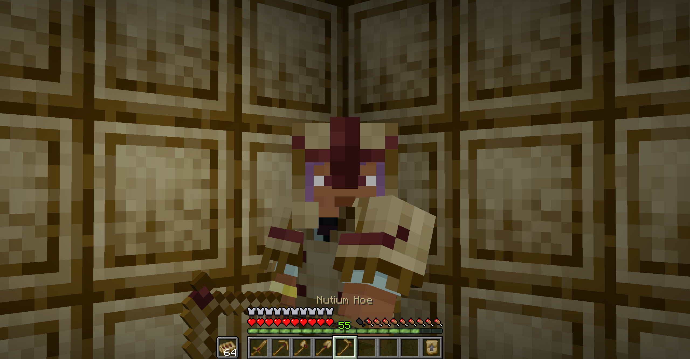
For the first time, Create: Garnished Reworked and a couple of other projects have received an update dedicated to joke content. For everyone who played around with these joke versions, hope you had fun discovering the weird and quirky features added or adjusted for the update!
Here is a culmination of all of the stuff from Create: Garnished Reworked's April Foods '26 update!
As you'll likely have noticed in your playthrough of this update, eating (mostly) anything nut related will now give you the Nut Allergy status effect. While the status effect is not new in this update, it did receive major alterations.
The Nut Allergy status effect itself - as mentioned before - has gotten overhauled specifically for this update. It now functions similar to the vanilla status effect - Poison - and damages entities repeatedly. However, this is done in a much more annoying fashion where each tick of damage has thorns knockback and the damage is dealt much faster. Perishing from this type of damage also has unique death messages, but I think are fair enough to mention here.
Voltfish now apply the Voltified status effect onto entities that they attack.
You can now... Uh, drink? Eat? Consume? The Mysterious Bottle of Volts directly if you feel so inclined.
Squirrels have now received a change that was initially going to be an actual feature in the base mod - be glad that it's not. They can now steal food from chests!
Additionally, a new easter egg variant has been discovered for this update! You might be able to guess what said variant is - D-D-Dimma-Dimmadome
Say bye bye to controversial fluid interactions - say hi to Porphyry being EVERY fluid interaction from Create: Garnished Reworked!
Each bite of a Pound Cake - yes even the regular Slices of Pound Cake - will now slow you down TREMENDOUSLY because those are some awfully large bites and certainly are a bit filling, no?
According to Dejojo, Churchkhela looks a bit like a stick of dynamite. And I must say, I see it now - and so therefore a piece of TNT will spawn right on the player after consuming such a dangerous-looking food source.
I'm sure some of yall were expecting there to be a Gingerbread man mob added alongside the Gingerbread Cookies and whatnot, but were disappointed when there wasn't. Well, you can have 'em! They keep on headbutting into my damn leg and it's pissing me off so PLEASE conjure them into your worlds and relieve me from this insanity!
If you are missing even a singular notch of hunger, you cannot sleep. Don't question it, just eat and you'll be fine :3
At the time of writing out ideas for this update, caramel didn't have much of a use. However
MANY months ago, specifically a little bit prior to the release of the halloween-themed update of Create: Garnished Reworked, a suggestions thread was made in the Discord server for my projects. A suggestion that came in by a user - Fordalels - jokingly mentioned Evil Peanut Butter. Well, what's more evil than instantly applying pretty much every single negative effect to the player at once... And instantaneously killing them - ANYWAYS, have fun with your mountain dew red flavoured peanut butter.
Funny, yeah? An addon to an addon for a mod implemented content that is now implemented into the addon for a mod for an April Fools update. Convoluted, yes, but now you have a step beyond Netherite with the powerful Nutium gear and tools!